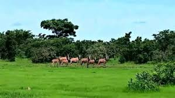

« Le royaume de la faune, du fleuve et de la terre Gourmantché »
Pays : Burkina Faso
Statut : Région (créée le 2 juillet 2025)
Origine : Scission de l'ancienne région de l'Est
Provinces : 2 (Tapoa + Dyamongou)
Chef-lieu : Diapaga
2e ville : Kantchari
Gouvernance : Gouverneur nommé par décret
Population estimée (2024) : ~450 000 hab.
Principale ethnie : Gourmantché (Gulmanceba)
Autres ethnies : Peulh (Fulani), Haoussa, Djerma, Mossi
Langues : Gourmantché (Gulmancema), Fulfuldé, Français
Religion : Islam, Christianisme, Animisme
Caractère : Fortement rural — Diapaga est le principal centre urbain
Situation : Extrême sud-est du Burkina Faso
Coordonnées : 11°30' – 12°25'N, 1°55' – 2°30'E
Distance de Ouagadougou : ~400 km (via Fada N'Gourma)
Frontières : Niger (Est), Bénin (Sud), Togo (Sud-Ouest)
Fuseau horaire : UTC+0
Indicatif : +226
Fleuve principal : La Tapoa (cours d'eau permanent — donne son nom à la région)
Autres cours d'eau : Pendjari (frontière Bénin), rivière Singou, Douboudo, Arly
Retenue d'eau : Barrage de Kompienga (plus de 2 milliards de m³) — frontière avec Goulmou
Convention : Zones humides protégées par la convention de Ramsar (2007)
Type climatique : Soudanien
Pluviométrie : 700 à 900 mm/an
Saisons : Saison des pluies (mai–oct.) / Saison sèche (nov.–avr.)
Végétation : Savane soudanienne, galeries forestières, savane boisée
Particularité : Présence de la falaise du Gobnangou — principale chaîne gréseuse de l'Est
Tapoa : Hydronyme tiré du fleuve Tapoa, principal cours d'eau permanent qui traverse la région.
Réforme : Décret du Conseil des ministres du 2 juillet 2025, sous l'impulsion du Capitaine Ibrahim Traoré, pour renforcer la défense stratégique du territoire national et promouvoir les valeurs endogènes.
Ancienne appartenance : Province de la Tapoa — Ex-région de l'Est

Présentation générale
Tapoa est l'une des quatre nouvelles régions créées par le décret du 2 juillet 2025, issue de la scission de l'ancienne région de l'Est. Son nom est un hydronyme tiré du fleuve Tapoa, seul cours d'eau permanent de son territoire. Située à l'extrême sud-est du pays, à 400 km de Ouagadougou, elle partage ses frontières avec le Niger, le Bénin et le Togo.
Fortement rurale et à dominante Gourmantché, la région de Tapoa est un véritable sanctuaire naturel : elle abrite le Parc National d'Arly (92 500 ha), partie intégrante du complexe transfrontalier W-Arly-Pendjari (WAP), reconnu Patrimoine mondial de l'UNESCO. La falaise du Gobnangou, les plaines de savane et les galeries forestières qui bordent la Pendjari en font l'une des zones de biodiversité les plus remarquables d'Afrique de l'Ouest. La province de la Tapoa est fortement rurale, à l'exception de son chef-lieu Diapaga où sont présents l'hôpital, l'école secondaire, des artisans et une usine d'égrenage du coton.
Potentialités touristiques & naturelles
Province de la Tapoa — 72 km au sud-ouest de Diapaga — Créé en 1950
Situé dans la province de la Tapoa en zone soudanienne, le Parc National d'Arly est une réserve totale de faune d'une superficie de 92 500 hectares. Il est accessible depuis Diapaga par la Route Nationale N°19 et depuis Ouagadougou à 435 km.
Ce parc est transfrontalier avec le Parc National du W (Niger) et la Réserve de la Pendjari (Bénin). Ensemble, ces trois entités forment le complexe W-Arly-Pendjari (WAP) — le plus vaste ensemble de conservation de biodiversité d'Afrique de l'Ouest, protégé par la Convention de Ramsar depuis 2007.
La monotonie des savanes plates est rompue par la présence de la falaise du Gobnangou et des collines de Pagou et Tambarga. Les galeries forestières qui bordent les rivières Pendjari, Singou et Arly contribuent à l'originalité exceptionnelle du site.
Sites touristiques remarquables
235 000 ha pour la partie burkinabè, sur un total de 1 023 000 ha transfrontaliers. Paysages de prairies aquatiques, savanes herbeuses et massifs rocheux. Protégé par la convention de Ramsar depuis 2007.
Ramsar 2007 TransfrontalierPrincipale chaîne gréseuse de l'Est du Burkina. Paysages spectaculaires entre Namounou et Logobou, avec cascades, grottes, réserves d'eau et faune sauvage. Randonnées guidées disponibles depuis le campement de Yentuguli.
Site naturelCours d'eau permanent à la frontière du Bénin. Promenades en pirogue pour observer hippopotames, crocodiles et oiseaux aquatiques dans leur milieu naturel. Point de jonction avec la Réserve de la Pendjari.
ÉcotourismeDes éco-lodges en cours d'aménagement pour l'hébergement au cœur du parc. Nuits en brousse avec ambiance sonore de la faune sauvage. Safari vision et suivi animalier avec guides officiels indispensables.
ÉcotourismeTansarga, Logobou, Tambaga — villages aux traditions ancestrales vivantes. Rencontre avec les peuples Gourmantché et Peulh, partage de leur hospitalité, danses et rituels culturels.
CulturelPoints de vue panoramiques sur l'ensemble du parc d'Arly et ses savanes à perte de vue. Couchers de soleil exceptionnels sur la savane soudanienne. Sites prisés des photographes animaliers.
PanoramaPotentialités agricoles 🌾
L'agriculture et l'élevage constituent les principales activités de la population de la région de Tapoa. La zone est caractérisée par des pratiques agricoles traditionnelles sur des sols soudaniens fertiles, bien arrosés par le fleuve Tapoa et ses affluents. La province dispose d'une usine d'égrenage de coton à Diapaga, témoignant de l'importance de cette culture de rente.
Ressources minières & industrielles
Le sous-sol de la région de Tapoa recèle des ressources minières variées, encore partiellement explorées. La monographie officielle de l'INSD identifie plusieurs sites d'intérêt industriel dans la province de la Tapoa, notamment du cuivre à Diapaga et du granite rose à Pama.
Gisement de cuivre identifié dans la commune de Diapaga. Potentiel en cours d'évaluation par les services géologiques nationaux.
Granite rose d'ornement identifié dans la zone de Pama. Matériau de construction et d'exportation à fort potentiel commercial.
Infrastructure agro-industrielle implantée à Diapaga, permettant la transformation du coton brut en fibre exportable. Maillon essentiel de la filière régionale.
Retenue d'eau de plus de 2 milliards de m³ à la frontière avec la région Goulmou. Centrale hydroélectrique contribuant à l'approvisionnement en énergie du pays.
Orpaillage traditionnel pratiqué dans plusieurs communes de la région. Activité génératrice de revenus pour les populations rurales.
Le tourisme de vision et cynégétique dans les parcs Arly et W représente une industrie touristique à fort potentiel de revenus, encore sous-exploitée.
Potentiel éducatif 🏫
La quasi-totalité des établissements secondaires de la région appartiennent à l'État, témoignant de l'importance accordée à l'éducation publique dans cette zone frontalière. Diapaga, chef-lieu, concentre l'essentiel des infrastructures éducatives.
Principal établissement secondaire public de la région — enseignement général et technique
Centre hospitalier de référence pour toute la région — couverture sanitaire de proximité
Formation aux métiers agricoles, mécaniques et de l'élevage adaptés au contexte régional
Formation de guides officiels pour les parcs Arly et W — valorisation du patrimoine naturel
Potentiel commercial 🛒
La position frontalière de la Tapoa avec le Niger, le Bénin et le Togo en fait un carrefour commercial stratégique. Kantchari, chef-lieu de la nouvelle province du Dyamongou, est un point de passage douanier important sur la Route Nationale N°4 reliant Ouagadougou au Niger.
Point de passage douanier stratégique sur la RN4 — commerce de transit entre Burkina, Niger et Nigeria
71 marchés à bétail dans la région — échanges de bovins, ovins, caprins avec les pays voisins
Marché hebdomadaire central — céréales, coton, bétail, artisanat Gourmantché
Transformation locale du coton avant exportation — emplois directs et indirects pour les producteurs
Artisanat traditionnel
Tradition de la forge ancrée dans la culture Gourmantché — fabrication d'outils agricoles, de couteaux et de bijoux en fer
Tissus traditionnels teints au bogolan — motifs géométriques caractéristiques de la culture Gourmantché
Canaris, jarres et objets en argile façonnés par les femmes Gourmantché — techniques transmises de génération en génération
Masques, statuettes et objets rituels sculptés dans les essences locales — lien profond avec les croyances animistes
Travail du cuir de bœuf par les artisans Peulh — sacs de voyage, fourreaux, ceintures à motifs traditionnels
Production de miel sauvage issu des ruches naturelles de la savane. Beurre de karité artisanal aux vertus cosmétiques et alimentaires reconnues
Galerie
Provinces
Province historique, cœur de la région. Couvre les communes de Diapaga, Logobou, Tambaga, Tansarga, Partiaga et Namounou.
📍 Chef-lieu : Diapaga
Nouvelle province créée le 2 juillet 2025. Couvre la zone frontalière avec le Niger, incluant la ville de Kantchari, point de passage douanier stratégique.
📍 Chef-lieu : Kantchari
Le saviez-vous ?
Le nom « W » du Parc National du W vient des méandres en forme de double W que trace le fleuve Niger dans les environs de Karey Kopto (Niger). Ce complexe transfrontalier W-Arly-Pendjari (WAP), dont la partie burkinabè se trouve en Tapoa, représente à lui seul le plus vaste domaine de conservation de la biodiversité d'Afrique de l'Ouest avec plus d'un million d'hectares protégés sur trois pays.
Localisation
Région de Tapoa — sud-est du Burkina Faso, aux frontières du Niger, du Bénin et du Togo. © OpenStreetMap contributors.